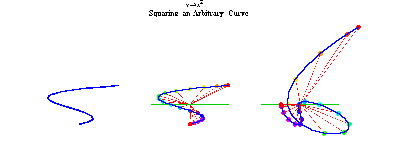
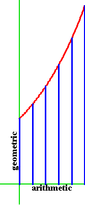
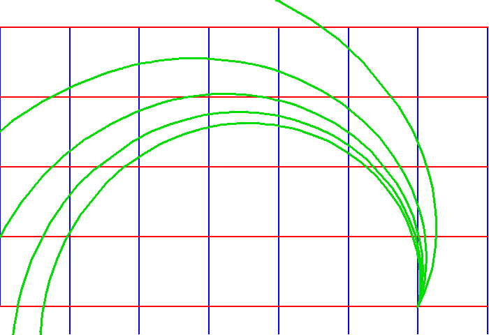
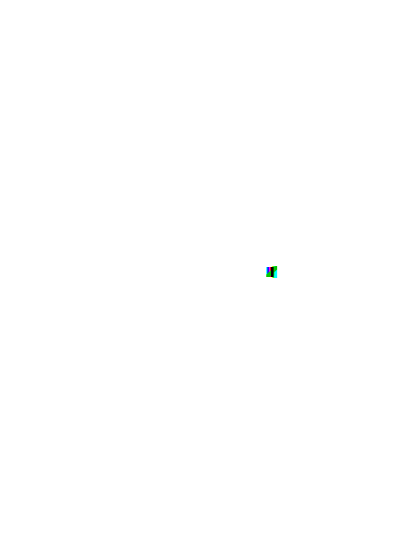
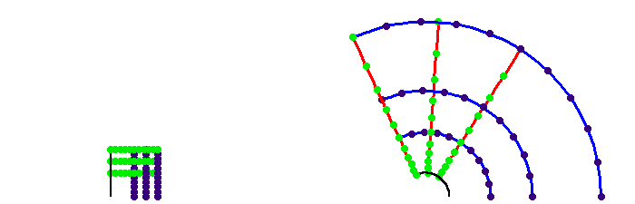
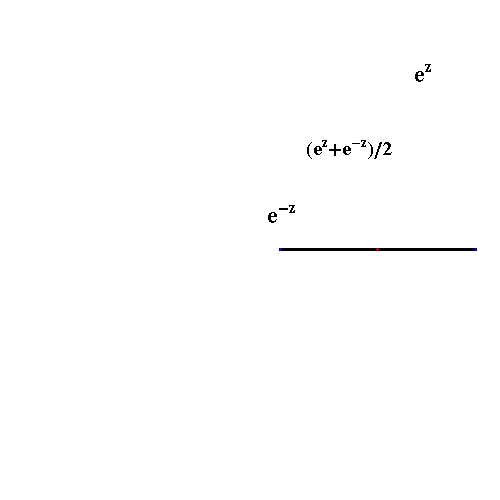
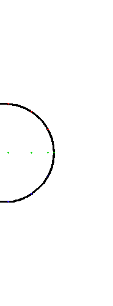
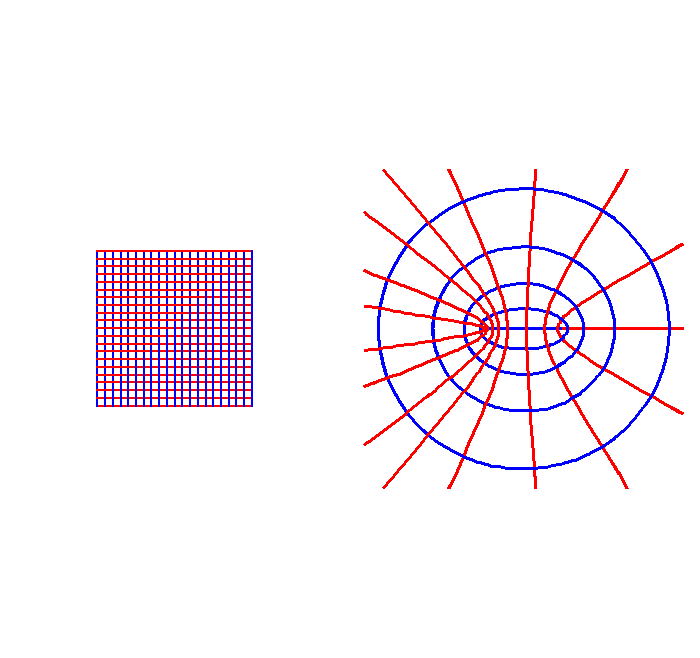
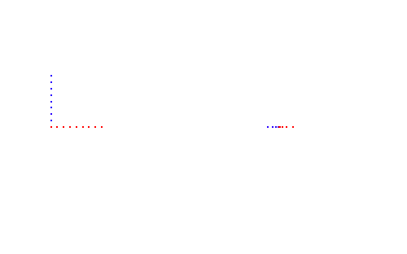

{kind=link}
Figure 1a

Riemann for Anti-Dummies Part 40
COGNITIVE LEAST ACTION
Throughout his various works on complex functions, Riemann notes that the hidden harmonies of the complex domain, not calculations, are the least action pathways for the discovery of truth.
Riemann's concept is in keeping with the tradition from Plato to Gauss, as exemplified by Gauss' determination of the orbit of Ceres. In that case, every leading astronomer attempted to deduce Ceres' orbit by an ever increasing level of calculations upon the few data points of observations supplied by Piazzi. All failed. Gauss, on the other hand, focused on Kepler's harmonic principles, finding Ceres' orbit as a consequence of them. Where the failures calculated unknown data from known data, Gauss sought the principles that determined both the known and unknown data. Gauss later distinguished his method from the failed ones with reference to Euler's famous attempt to deduce the orbit of a comet by detailed calculation, an effort that left Euler blind in one eye. "I too would have gone blind," Gauss is reported to have said, "If I calculated like Euler did."
As urgent and necessary as it is for political leaders to grasp Gauss' and Riemann's method, it nonetheless presents serious psychological difficulties for those reared in the fantasy world of the post-1966 consumer society. As noted in last week's installment, consumers only know objects and how to manipulate them. Acting on the world is limited to manipulating those objects according to a set of authoritative rules. Consumers look in awe to those other consumers who appear to manipulate the greatest number of objects. (Modern academics call this objective science.) It is no wonder that under conditions of systemic collapse, such consumers become fear-driven pessimists.
Yet, to act on the world as Gauss and Riemann did, requires a capacity of mind to grasp not things, but relationships. Not merely relations among things, but relationships among sets of relations. This, as Gauss and Riemann demonstrated, is the province of the complex domain.
To further illustrate this point, look at the principle of universal gravitation. As a principle, universal gravitation is not expressible by a number, such as 32/feet/second/second. Nor is it expressible by an algebraic formula such as the inverse square law. Principles, to be truly comprehended, can only be known by how they act on other principles. As such, principles must be thought of only by Riemann's concept of a manifold. Under Riemann's idea of a complex function, the mind acts, not on things, but on manifolds of principles.
This concept is well developed by Kepler's succession of discoveries with regard to planetary motion, from the astronomical significance of the Platonic solids, to the elliptical orbits, to the harmonic proportions among the orbits. Each of the above principles expresses a set of relations. Universal gravitation expresses the relationship among these sets of relations.
The Leibniz/Bernoulli principle of the catenary similarly expresses a set of relations, ordered by the principle of universal gravitation. As will be illustrated below, the complex domain affords us the power to comprehend the unifying relationship of universal gravitation between these two sets of seemingly different relations.
Before exploring more specifically the manifold of universal gravitation, it were beneficial to engage in a short warm-up exercise. Look again at a simple example of a complex function, for example, the complex function that corresponds to the general principle of doubling the square. (See figure 1a, figure 1b, and figure 1c.)
Figure 1a |
Figure 1b  |
Figure 1c  |
Use this example to begin to wrench your mind away from the consumerist fixation on things, so as to be able to better grasp the physical example that will follow. In this example, think of the orthogonal grid of lines depicted on the left side of 1b not as a collection of lines and points, but as a metaphorical representation of a set of ideas related to each other in that way. Each idea is represented by a complex number, which denotes a unique action. (That action is always with respect to some origin, which is always defined by some physical singularity.) The lines connecting the points can be thought of, metaphorically, as least action pathways, i.e. geodesics, with respect to the principle of organization of the manifold of ideas represented.
Now, a new principle is introduced, in this example the principle of doubling the square. The introduction of that principle transforms all the straight-line relationships into parabolic pathways. The introduction of such a new principle, transforms all the relationships of the manifold, all at once, without, so to speak, calculation. To properly grasp this conception, resist the tendency to think of the grid of lines as a thing and the grid of parabolic pathways as another thing. Rather, think of one manifold-- a polyphony evoked by the introduction of the new principle of squaring, which changes the "geodesic" within each set of relations. (See animation 1.)
Animation 1  |
Armed with this warm up, move on, to a physical example:
What is the connection, with respect to the principle of universal gravitation, between the least action pathway expressed by the catenary and the least action pathways expressed by the conic section planetary orbits of Kepler and Gauss? This can only be grasped from the standpoint of the complex domain.
Begin with Leibniz' discovery that the catenary expresses the arithmetic mean between two exponential (logarithmic) functions. (See figure 2.)
 |
Figure 3  |
But, as Riemann noted, when this relationship among sets of relations is viewed from the standpoint of the complex domain, "a regularity and harmony emerge that otherwise remain hidden."
Look, first, at the exponential/logarithmic relationship in the complex domain. To do this, we must think, as Gauss did, of the complex domain as represented by a doubly-extended surface, with a physically determined origin, in this case, the lowest point of the catenary. Each point on the surface represents a complex number which itself denotes a unique exponential action. (See figure 4.)
Figure 4  |
Complex numbers represented by points equally spaced along a line are related to each other arithmetically. Complex numbers represented by points along a spiral, are related to each other geometrically. Thought of in this way, a grid of lines expresses an arithmetic relationship between complex exponentials. (See figure 5.)
Figure 5  |
The points along any one line are arithmetically related complex numbers. Lines that are equally spaced to other lines, (such as those in the grid) are arithmetically related sets of arithmetically related complex numbers.
Now, take this relationship so described, and use that as a principle of transformation of the complex domain itself. (See animation 2.)
Animation 2  |
This transformation expresses, from the higher standpoint of the complex domain., the relationship between the arithmetic and geometric that was otherwise previously expressed by Leibniz, et al. with respect to exponential, circular and hyperbolic functions. The complex exponential transforms the arithmetic relationships into geometric ones, creating a sort of arithmetic-geometric relationship among arithmetic-geometric relationships. Here, the arithmetically related (equal spaced), vertical lines become circles whose radii are geometrically related. The points along each line that are arithmetically related (equally spaced) become equally spaced points along the arcs of the circles. Inversely, the arithmetically related (equally spaced) horizontal lines become equally spaced radii, while the arithmetically related (equally spaced) points along each horizontal line, become geometrically related points along each radii. (See figure 6.)
Figure 6  |
When one considers the circles as special cases of spirals, the equally spaced radii and equally spaced points along the arcs are also in geometric relationship to each other as well.
Now take the next step, and apply Leibniz' principle of the catenary as the arithmetic mean between two exponentials in this complex domain. The arithmetic mean between two inversely related circles forms an ellipse. (See animation 3.)
Animation 3  |
The arithmetic mean between two inversely related radii forms an hyperbola. ( See animation 4.)
Animation 4  |
The totality of this transformation forms an orthogonal array of ellipses and hyperbolas which correspond to the least-action pathways of the catenary in the complex domain. (See figure 7, and animation 5.)
Figure 7  |
Animation 5  |
Thus, Leibniz' catenary principle, expressed in the complex domain of Gauss and Riemann expresses a manifold of elliptical and hyperbolic least-action pathways. In other words, the complex domain, as that domain in which we can represent as shadows, the manifold of relationships among sets relationships, increases the cognitive power of the mind, such that we become able to comprehend universal gravitation, as a principle of unity of least action among the catenary and conic section planetary orbits, and, of course, much, much, more.
{kind=link}
{kind=link}
{kind=link}
{kind=link}
{kind=link}
{kind=link}
{kind=link}
{kind=link}